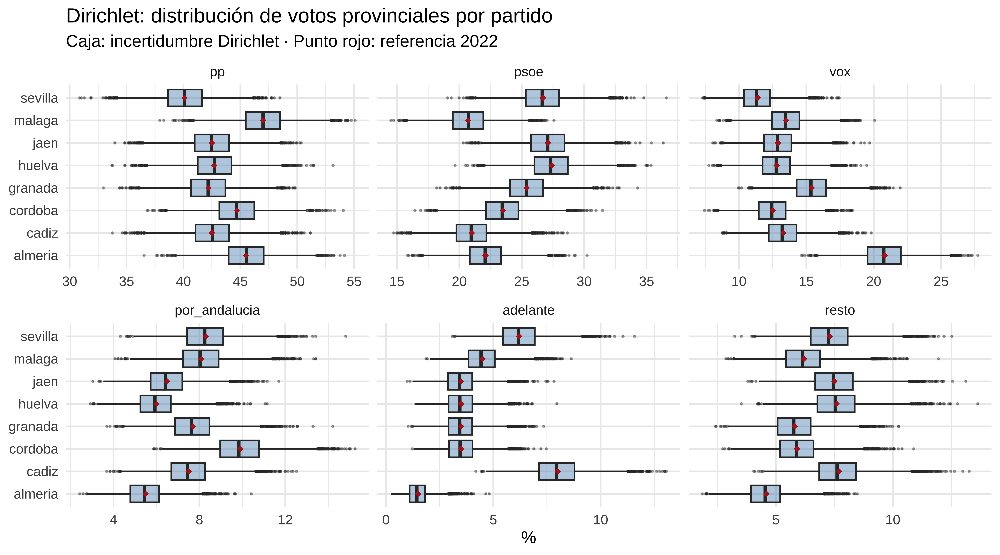
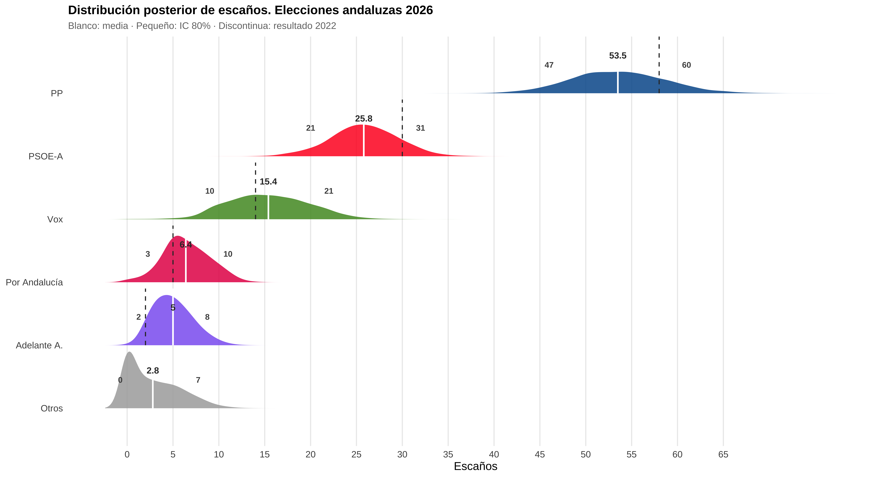
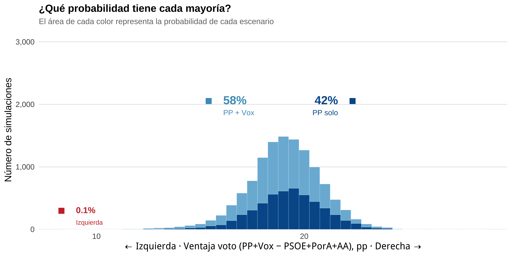

Show the code
library(tidyverse)
library(brms)
library(tidybayes)
library(gtools)
library(ggridges)
library(furrr)
library(here)
options(brms.backend = "cmdstanr")May 16, 2026
En el post anterior vimos un modelo bayesiano para hacer un meta análisis de las encuestas publicadas de las elecciones al parlmento de Andalucía. Por muy sofisticado que parezca no es más que una agregación de encuestas pero intentando cuantificar un poco la incertidumbre de las mismas. Cierto que no sabemos la cocina de cada una de las encuestas, y como tampoco publican sus hipótesis sobre la abstención pues se hace lo que se puede.
No obstante hay otras fuentes de incertidumbre, vamos a considerar algunas.
[1] Incertidumbre del modelo bayesiano de encuestas.
Esta incertidumbre la capturamos con el modelo bayesiano del post anterior, intenta responder a “¿cuánto voto tiene realmente cada partido a nivel andaluz?” y las posibles variaciones inherentes a que se trata de encuestas.
[2] Error histórico de las encuestas.
Las encuestas se equivovan y es posible que de una forma determinada. Por ejemplo, cuando se ha sobreestimado al PP normalmente es porque se ha infraestimado a VOX, y al revés, por tanto entre estos dos partidos el error está correlado y con correlación negativa. En el caso del bloque de las izquierdas la correlación de los errores suele ser positiva, cuando se infraestima al psoe se suele infraestimar a IU ( Por Andalucía ), es posible que esto tenga que ver con errores cometidos por las encuestas en la estimación de la abstención.
Para capturar esta incertidumbre consideraremos una distribución normal multivariante con vector de medias 0 y matriz de varianzas covarianzas la definida por la desviación típica histórica (o estimada a dedo) del error para cada partido y la matriz de correlación que refleje el hecho de que esos errores están correlados.
[3] Distribución provincial Las encuestas que manejamos no dan dato a nivel provincial, o si lo dan , el tamaño muestreal de las mismas no garantiza unas etimaciones realistas. Por tanto si queremos obtener % de votos por provincias (necesario para estimar escaños ) tenemos que hacer una hipótesis. En este caso la hipótesis fuerte que hacemos es que el voto se va a distribuir por provincia de forma similar a como lo hizo en 2022. Ahora bien, podemos perturbar un poco esos números para reflejar la incertidumbre. Eso lo podremos hacer utilizando una distribución dirichlet.
partidos <- c("pp", "psoe", "vox", "por_andalucia", "adelante", "resto")
# Errores históricos: E = Real − Estimación (en puntos porcentuales)
# Fuente: 20 años de elecciones andaluzas (2004-2022)
# Izq. (IU/Pod/PorA) repartido igualmente entre por_andalucia y adelante;
# Cs asignado a resto en todos los ciclos.
error_hist <- matrix(
c(
# pp psoe vox pora aa resto
+6.3, -1.0, -3.7, -0.7, -0.7, -3.3, # 2022
+0.5, -2.6, +7.9, -1.4, -1.4, -0.2, # 2018
+3.2, +1.9, NA, -1.2, NA, -2.7, # 2015 (sin Vox / sin AA)
-3.8, +6.3, NA, -1.2, NA, NA, # 2012
+0.4, -0.8, NA, -0.1, NA, NA, # 2008
-1.1, +3.3, NA, -1.3, NA, NA # 2004
),
nrow = 6, byrow = TRUE,
dimnames = list(c("2022","2018","2015","2012","2008","2004"), partidos)
)
# σ por partido: calculadas del histórico disponible; VOX y PP tienen mayor
# incertidumbre por el trasvase de voto útil en el electorado andaluz
sigma_pp <- c(
pp = 3.0,
psoe = 2.8,
vox = 3.0, # 2018 fue anomalía de primera irrupción; desde 2022 Vox es predecible
por_andalucia = 1.8,
adelante = 1.5,
resto = 2.0
)
# Matriz de correlación del error de encuestas, especificada a mano.
# Con solo 2 elecciones con datos completos (2022 y 2018) no hay suficiente
# muestra para estimarla del histórico; se usa criterio experto ( es decir, lo que me ha dado la gana)
# basado en la
# dinámica del voto andaluz:
#
# ρ(PP, VOX) = -0.5 Las encuestas sobreestiman a uno cuando infraestiman
# al otro (trasvase de voto útil en el bloque de derecha).
# En 2022 el PP se llevó +6.3 pp mientras Vox se quedó
# en -3.7 pp respecto a las encuestas.
#
# ρ(PSOE, PorA) = +0.5 El bloque de izquierda falla o acierta en bloque:
# ρ(PSOE, AA) = +0.4 cuando las encuestas inflan PSOE suelen inflar
# también PorA y Adelante (o al revés).
#
# ρ(PorA, AA) = +0.6 Los dos partidos a la izquierda del PSOE comparten
# electores y sus errores de encuesta van en la misma
# dirección.
#
# El código que sigue imprime la correlación empírica de los dos años con
# datos completos como sanity-check; los valores son ruidosos por el n=2
# pero las correlaciones de mayor magnitud coinciden con la estructura aquí.
cor(error_hist[complete.cases(error_hist), ], use = "complete.obs") |> round(2)
#> pp psoe vox por_andalucia adelante resto
#> pp 1 1 -1 1 1 -1
#> psoe 1 1 -1 1 1 -1
#> vox -1 -1 1 -1 -1 1
#> por_andalucia 1 1 -1 1 1 -1
#> adelante 1 1 -1 1 1 -1
#> resto -1 -1 1 -1 -1 1
R_corr <- matrix(c(
# pp psoe vox pora aa resto
1.0, -0.3, -0.5, -0.1, -0.1, 0.0,
-0.3, 1.0, -0.2, 0.5, 0.4, 0.0,
-0.5, -0.2, 1.0, -0.1, -0.1, 0.0,
-0.1, 0.5, -0.1, 1.0, 0.6, 0.0,
-0.1, 0.4, -0.1, 0.6, 1.0, 0.0,
0.0, 0.0, 0.0, 0.0, 0.0, 1.0
), nrow = 6, ncol = 6, byrow = TRUE,
dimnames = list(partidos, partidos))
# Σ = D R D (en pp²), convertida a proporciones dividiendo por 100²
D_sigma <- diag(sigma_pp)
Sigma_struct <- D_sigma %*% R_corr %*% D_sigma
Sigma_prop <- Sigma_struct / 1e4
cat("Sigma_struct (en pp²):\n")
#> Sigma_struct (en pp²):
round(Sigma_struct, 2)
#> [,1] [,2] [,3] [,4] [,5] [,6]
#> [1,] 9.00 -2.52 -4.50 -0.54 -0.45 0
#> [2,] -2.52 7.84 -1.68 2.52 1.68 0
#> [3,] -4.50 -1.68 9.00 -0.54 -0.45 0
#> [4,] -0.54 2.52 -0.54 3.24 1.62 0
#> [5,] -0.45 1.68 -0.45 1.62 2.25 0
#> [6,] 0.00 0.00 0.00 0.00 0.00 4
cat("\nSigma_prop (en proporciones², la que se usa en mvrnorm):\n")
#>
#> Sigma_prop (en proporciones², la que se usa en mvrnorm):
round(Sigma_prop, 6)
#> [,1] [,2] [,3] [,4] [,5] [,6]
#> [1,] 0.000900 -0.000252 -0.000450 -0.000054 -0.000045 0e+00
#> [2,] -0.000252 0.000784 -0.000168 0.000252 0.000168 0e+00
#> [3,] -0.000450 -0.000168 0.000900 -0.000054 -0.000045 0e+00
#> [4,] -0.000054 0.000252 -0.000054 0.000324 0.000162 0e+00
#> [5,] -0.000045 0.000168 -0.000045 0.000162 0.000225 0e+00
#> [6,] 0.000000 0.000000 0.000000 0.000000 0.000000 4e-04
set.seed(2847)
error_draws <- MASS::mvrnorm(
12000,# teníamos 12 mil posterioris, simulamos 12000 extracciones de la normal multivariante.
# nrow(draws_wide),
mu = rep(0, 6),
Sigma = Sigma_prop
)
head(error_draws, 2)
#> [,1] [,2] [,3] [,4] [,5] [,6]
#> [1,] 0.038305880 -0.02189096 -0.01922132 0.006665758 0.005183030 0.0143801257
#> [2,] 0.006045997 -0.01201507 -0.01939947 -0.011633220 0.006408321 -0.0009127092Como añadiríamos esta primera fuente de incertidumbre?
Simplemente a las posterioris del modelo bayesiano, le añadimos una extracción de los errores multivariantes.
Cargo el modelo del post anterior y saco los draws para time = 0 (día de elecciones, empresa desconocida).
partidos <- c("pp", "psoe", "vox", "por_andalucia", "adelante", "resto")
draws_wide <- tibble(empresa = "votaciones_17mayo", time = 0, n = 1) |>
add_epred_draws(model_andalucia, allow_new_levels = TRUE) |>
ungroup() |>
dplyr::select(.draw, .category, .epred) |>
pivot_wider(names_from = .category, values_from = .epred)
cat("Draws disponibles:", nrow(draws_wide), "\n")
#> Draws disponibles: 12000
head(draws_wide, 2)
#> # A tibble: 2 × 7
#> .draw pp psoe vox por_andalucia adelante resto
#> <int> <dbl> <dbl> <dbl> <dbl> <dbl> <dbl>
#> 1 1 0.428 0.251 0.127 0.0781 0.0720 0.0448
#> 2 2 0.435 0.226 0.146 0.0810 0.0777 0.0343Pues para la primera posteriori sería así.
# por operativividad convertimos draws_wide a matriz
n_draws <- nrow(draws_wide)
draws_mat <- as.matrix(draws_wide[, partidos])
cat("Primera posterior del modelo bayesiano:\n")
#> Primera posterior del modelo bayesiano:
draws_mat[1, ]
#> pp psoe vox por_andalucia adelante
#> 0.42772282 0.25088821 0.12656225 0.07805117 0.07198448
#> resto
#> 0.04479108
cat("Primera extracción de los errores multivariantes:\n")
#> Primera extracción de los errores multivariantes:
error_draws[1,]
#> [1] 0.038305880 -0.021890957 -0.019221317 0.006665758 0.005183030
#> [6] 0.014380126
cat("Posterior con error:\n")
#> Posterior con error:
(draw_adj_test <- draws_mat[1, ] + error_draws[1, ])
#> pp psoe vox por_andalucia adelante
#> 0.46602870 0.22899725 0.10734093 0.08471692 0.07716750
#> resto
#> 0.05917120Como tenemos errores que pueden ser negativos, y partidos que pueden tener estimaciones muy pequeñas, tenemos que asegurarnos que las posterioris ajustadas sean >=0
# Verificamos que las dimensiones coincidan antes de sumar
stopifnot(dim(draws_mat) == dim(error_draws))
# Suma elemento a elemento + suelo en 0 (no puede haber proporciones negativas)
draw_adj <- pmax(draws_mat + error_draws, 0)
# Normalización por filas: cada fila debe sumar 1
draw_adj <- draw_adj / rowSums(draw_adj)
# Comprobación con las dos primeras filas
draws_mat[1:2, ]
#> pp psoe vox por_andalucia adelante resto
#> [1,] 0.4277228 0.2508882 0.1265622 0.07805117 0.07198448 0.04479108
#> [2,] 0.4354169 0.2260238 0.1456273 0.08097195 0.07770357 0.03425654
error_draws[1:2, ]
#> [,1] [,2] [,3] [,4] [,5] [,6]
#> [1,] 0.038305880 -0.02189096 -0.01922132 0.006665758 0.005183030 0.0143801257
#> [2,] 0.006045997 -0.01201507 -0.01939947 -0.011633220 0.006408321 -0.0009127092
draw_adj[1:2, ]
#> pp psoe vox por_andalucia adelante resto
#> [1,] 0.4553630 0.2237563 0.1048843 0.08277805 0.07540141 0.05781698
#> [2,] 0.4558242 0.2209706 0.1303341 0.07159439 0.08684814 0.03442854
rowSums(draw_adj[1:2, ]) # debe ser c(1, 1)
#> [1] 1 1Las encuestas dan porcentajes a nivel regional. Para asignar escaños necesitamos porcentajes por provincia, porque D’Hondt se aplica en cada una de las 8 circunscripciones. La hipótesis de trabajo es que el reparto provincial de 2026 se parecerá al de 2022: si en Almería el PP sacó un 5 % más que su media regional, asumimos que ese diferencial se mantiene.
Formalmente, si el draw regional para el partido \(p\) es \(\pi_p\) y en 2022 sacó \(r_{p,prov}\) en la provincia, la estimación provincial es
\[\tilde{\pi}_{p,prov} = \pi_p \cdot \frac{r_{p,prov}}{\bar{r}_p}\]
y luego normalizamos para que sumen 1 dentro de cada provincia.
Pero esto es un supuesto rígido. Para añadir incertidumbre provincial usamos una distribución Dirichlet: en vez de usar los porcentajes de 2022 fijos, sampleamos de una Dirichlet centrada en ellos. El parámetro de concentración \(\alpha\) controla cuánto dispersamos: a mayor \(\alpha\), menos incertidumbre.
\[\alpha_{p,prov} = \frac{\text{votos}_{prov}}{scale\_factor} \times \frac{r_{p,prov}}{100}\]
Con scale_factor = 1000 obtenemos una desviación típica de ≈ 2-4 pp por partido y provincia, que es una incertidumbre razonable dado que los sesgos territoriales cambian entre elecciones.
escanos_prov <- tibble(
provincia = c("Sevilla", "Málaga", "Cádiz", "Granada",
"Almería", "Córdoba", "Huelva", "Jaén"),
escanos = c(18, 17, 15, 13, 12, 12, 11, 11)
)
ref_2022 <- read_csv(here::here("2026/05/ref_provincial_2022.csv"))
# Media regional 2022 (denominador del ratio provincial)
regional_2022 <- c(
pp = 43.10,
psoe = 24.10,
vox = 13.46,
por_andalucia = 7.68,
adelante = 4.58,
resto = 7.08
)
head(ref_2022)
#> # A tibble: 6 × 8
#> provincia escanos pp psoe vox por_andalucia adelante resto
#> <chr> <dbl> <dbl> <dbl> <dbl> <dbl> <dbl> <dbl>
#> 1 almeria 12 45.5 22.1 20.8 5.5 1.5 4.6
#> 2 cadiz 15 42.5 21 13.3 7.5 8 7.7
#> 3 cordoba 12 44.7 23.5 12.5 9.9 3.5 5.9
#> 4 granada 13 42.2 25.4 15.4 7.7 3.5 5.8
#> 5 huelva 11 42.7 27.4 12.8 6 3.5 7.6
#> 6 jaen 11 42.5 27.1 12.9 6.5 3.5 7.5Pre-generamos las matrices Dirichlet fuera del bucle de simulación: una matriz n_draws × 6 por cada provincia (8 matrices en total). Así hacemos 8 llamadas a rdirichlet(n_draws, α) en vez de n_draws × 8 llamadas a rdirichlet(1, α).
Usamos una concentración fija igual para todas las provincias (n_total = 500).
set.seed(1234)
n_total <- 500 # concentración igual para todas las provincias
dirichlet_mats <- lapply(seq_len(nrow(ref_2022)), function(i) {
alpha <- as.numeric(ref_2022[i, partidos]) / 100 * n_total
mat <- gtools::rdirichlet(n_draws, alpha)
colnames(mat) <- partidos
mat
})
names(dirichlet_mats) <- ref_2022$provinciaPara entender qué hace la Dirichlet, veamos 5 draws de Almería comparados con la referencia 2022. Almería es interesante porque VOX sacó allí el doble que su media regional.
cat("Referencia fija 2022 (Almería, %):\n")
#> Referencia fija 2022 (Almería, %):
round(as.numeric(ref_2022[ref_2022$provincia == "almeria", partidos]), 1)
#> [1] 45.5 22.1 20.8 5.5 1.5 4.6
cat("\n5 draws Dirichlet Almería (%):\n")
#>
#> 5 draws Dirichlet Almería (%):
round(dirichlet_mats[["almeria"]][1:5, ] * 100, 1)
#> pp psoe vox por_andalucia adelante resto
#> [1,] 43.5 23.5 22.3 4.8 1.7 4.1
#> [2,] 48.7 20.8 19.8 3.8 1.4 5.5
#> [3,] 45.3 22.1 22.3 4.8 1.5 4.1
#> [4,] 46.7 22.6 18.4 5.6 1.4 5.3
#> [5,] 45.0 26.6 16.2 6.3 1.7 4.2La referencia es fija; cada draw es una perturbación alrededor de ella. Para ver la dispersión en todas las provincias a la vez. Fíjate especialmente en Adelante Andalucía: en algunas provincias la Dirichlet le da un rango que se solapa con el de Por Andalucía.
map_dfr(names(dirichlet_mats), function(prov) {
as_tibble(dirichlet_mats[[prov]] * 100) |>
mutate(provincia = prov)
}) |>
pivot_longer(-provincia, names_to = "partido", values_to = "pct") |>
left_join(
ref_2022 |>
pivot_longer(all_of(partidos), names_to = "partido", values_to = "ref"),
by = c("provincia", "partido")
) |>
mutate(partido = factor(partido, levels = partidos)) |>
ggplot(aes(x = pct, y = provincia)) +
geom_boxplot(outlier.size = 0.3, fill = "steelblue", alpha = 0.4) +
geom_point(aes(x = ref), color = "firebrick", size = 1.5, shape = 18) +
facet_wrap(~partido, scales = "free_x") +
labs(
title = "Dirichlet: distribución de votos provinciales por partido",
subtitle = "Caja: incertidumbre Dirichlet · Punto rojo: referencia 2022",
x = "%", y = NULL
) +
theme_minimal(base_size = 11)
En las encuestas, Por Andalucía aparece consistentemente por delante de Adelante Andalucía. Pero la incertidumbre provincial hace que en algunas simulaciones los escaños se inviertan. Lo calculamos después de la simulación completa.
La regla es simple: se reparten los escaños uno a uno, y cada vez se lo lleva el partido con el cociente más alto de \(\text{votos} / (\text{escaños\_ya\_obtenidos} + 1)\).
Antes del bucle completo, veamos qué pasa con el primer draw en Almería (12 escaños). Partimos de draw_adj[1, ] (posterior regional ajustada con error histórico) y lo perturbamos con el sample Dirichlet 1 de Almería para obtener proporciones provinciales:
cat("Draw regional ajustado (posterior + error histórico, fila 1):\n")
#> Draw regional ajustado (posterior + error histórico, fila 1):
(draw_regional <- draw_adj[1, ])
#> pp psoe vox por_andalucia adelante
#> 0.45536296 0.22375631 0.10488428 0.08277805 0.07540141
#> resto
#> 0.05781698
cat("\nSample Dirichlet 1 de Almería (proporciones provinciales):\n")
#>
#> Sample Dirichlet 1 de Almería (proporciones provinciales):
(dir_almeria_1 <- dirichlet_mats[["almeria"]][1, ])
#> pp psoe vox por_andalucia adelante
#> 0.43462453 0.23545714 0.22271139 0.04849056 0.01745937
#> resto
#> 0.04125701
cat("\nRatio Almería vs media regional 2022 (cuánto se desvía cada partido):\n")
#>
#> Ratio Almería vs media regional 2022 (cuánto se desvía cada partido):
(ratio_almeria <- dir_almeria_1 / (regional_2022[partidos] / 100))
#> pp psoe vox por_andalucia adelante
#> 1.0084096 0.9770006 1.6546165 0.6313875 0.3812090
#> resto
#> 0.5827261
cat("\nProporciones crudas Almería (regional × ratio):\n")
#>
#> Proporciones crudas Almería (regional × ratio):
(raw_almeria <- draw_regional * ratio_almeria)
#> pp psoe vox por_andalucia adelante
#> 0.45919237 0.21861005 0.17354326 0.05226503 0.02874369
#> resto
#> 0.03369146
cat("\nProporciones normalizadas Almería (suman 1):\n")
#>
#> Proporciones normalizadas Almería (suman 1):
(norm_almeria <- raw_almeria / sum(raw_almeria))
#> pp psoe vox por_andalucia adelante
#> 0.47533185 0.22629366 0.17964288 0.05410202 0.02975396
#> resto
#> 0.03487564
cat("\nEn porcentaje:\n")
#>
#> En porcentaje:
round(norm_almeria * 100, 1)
#> pp psoe vox por_andalucia adelante
#> 47.5 22.6 18.0 5.4 3.0
#> resto
#> 3.5
cat("\nEscaños D'Hondt Almería (12 escaños):\n")
#>
#> Escaños D'Hondt Almería (12 escaños):
(dhondt(norm_almeria, escanos_prov$escanos[escanos_prov$provincia == "Almería"]))
#> pp psoe vox por_andalucia adelante
#> 7 3 2 0 0
#> resto
#> 0Ahora hacemos esto para las 8 provincias y los n_draws draws. Encapsulamos la lógica provincial en una función y paralelizamos con furrr:
Gracias a que tenemos las draw_adj en matriz y las muestras de las dirichlet en matriz la simulación se hace de forma bastante eficiente. De todas forma usamos furrr porque para cada una de las 12000 simulaciones y para cada una de las 8 provincias queremos hacer la distribución de escaños.
library(furrr)
sim_escanos_draw <- function(k, draw_vec) {
escanos_totales <- integer(length(partidos))
names(escanos_totales) <- partidos
for (i in seq_len(nrow(ref_2022))) {
# dirichlet_mats[[i]] → matriz n_draws×6 de la provincia i
# [k, ] → fila k: la muestra Dirichlet correspondiente a este draw
prov_vec <- dirichlet_mats[[i]][k, ]
ratio <- prov_vec / (regional_2022[partidos] / 100) # desviación provincial vs media regional
raw <- draw_vec * ratio
norm <- raw / sum(raw) # normalizamos para que sumen 1 dentro de la provincia
escanos_totales <- escanos_totales + dhondt(norm, ref_2022$escanos[i])
}
escanos_totales
}
plan(multisession, workers = parallel::detectCores() - 1)
escanos_list <- future_map(
seq_len(n_draws),
\(k) sim_escanos_draw(k, draw_adj[k, ]),
.options = furrr_options(seed = NULL)
)
plan(sequential)
cat("Primeros 3 draws de escaños totales:\n")
#> Primeros 3 draws de escaños totales:
escanos_list[1:3]
#> [[1]]
#> pp psoe vox por_andalucia adelante
#> 58 28 11 6 4
#> resto
#> 2
#>
#> [[2]]
#> pp psoe vox por_andalucia adelante
#> 56 27 13 4 9
#> resto
#> 0
#>
#> [[3]]
#> pp psoe vox por_andalucia adelante
#> 49 22 25 8 5
#> resto
#> 0Primero montamos el dataframe de resultados y validamos que todos los draws sumen 109 escaños.
nombres_partido <- c(
pp_esc = "PP",
psoe_esc = "PSOE-A",
vox_esc = "Vox",
por_andalucia_esc = "Por Andalucía",
adelante_esc = "Adelante A.",
resto_esc = "Otros"
)
resultados_escanos <- draws_wide |>
mutate(
escanos = escanos_list,
pp_esc = map_int(escanos_list, "pp"),
psoe_esc = map_int(escanos_list, "psoe"),
vox_esc = map_int(escanos_list, "vox"),
por_andalucia_esc = map_int(escanos_list, "por_andalucia"),
adelante_esc = map_int(escanos_list, "adelante"),
resto_esc = map_int(escanos_list, "resto")
)
# Comprobación: todos los draws deben sumar exactamente 109 escaños
n_mal <- resultados_escanos |>
transmute(total = pp_esc + psoe_esc + vox_esc + por_andalucia_esc + adelante_esc + resto_esc) |>
filter(total != 109) |>
nrow()
if (n_mal > 0) {
stop(sprintf("¡Error en D'Hondt! %d draws no suman 109 escaños.", n_mal))
} else {
message(sprintf("✓ Los %d draws suman exactamente 109 escaños.", nrow(resultados_escanos)))
}colores_esc <- c(
"PP" = "#005999",
"PSOE-A" = "#FF0126",
"Vox" = "#51962A",
"Por Andalucía" = "#E51C55",
"Adelante A." = "#8C66F1",
"Otros" = "#aaaaaa"
)
orden_partidos <- c("PP", "PSOE-A", "Vox", "Por Andalucía", "Adelante A.", "Otros")
niveles_ridge <- rev(orden_partidos)
resumen_ridge <- resultados_escanos |>
select(all_of(names(nombres_partido))) |>
summarise(across(
everything(),
list(
media = mean,
lo80 = \(x) quantile(x, 0.10),
hi80 = \(x) quantile(x, 0.90)
)
)) |>
pivot_longer(
everything(),
names_to = c("partido", ".value"),
names_sep = "_(?=[^_]+$)"
) |>
mutate(
partido = nombres_partido[partido],
partido = factor(partido, levels = niveles_ridge),
media = round(media, 1)
)
ref2022_ridge <- tibble(
partido = factor(c("PP", "PSOE-A", "Vox", "Por Andalucía", "Adelante A."),
levels = niveles_ridge),
escanos_2022 = c(58, 30, 14, 5, 2)
)
resultados_escanos |>
select(.draw, all_of(names(nombres_partido))) |>
pivot_longer(-.draw, names_to = "partido", values_to = "escanos") |>
mutate(
partido = nombres_partido[partido],
partido = factor(partido, levels = niveles_ridge)
) |>
ggplot(aes(x = escanos, y = partido, fill = partido)) +
geom_density_ridges(scale = 0.9, bandwidth = 0.8, alpha = 0.85, color = NA) +
geom_segment(
data = resumen_ridge,
aes(x = media, xend = media,
y = as.numeric(partido), yend = as.numeric(partido) + 0.9),
color = "white", linewidth = 0.8
) +
geom_segment(
data = ref2022_ridge,
aes(x = escanos_2022, xend = escanos_2022,
y = as.numeric(partido), yend = as.numeric(partido) + 0.9),
color = "grey20", linewidth = 0.55, linetype = "dashed"
) +
geom_text(
data = resumen_ridge,
aes(x = media, y = partido, label = media),
nudge_y = 0.60, fontface = "bold", size = 3.3, color = "grey20"
) +
geom_text(
data = resumen_ridge,
aes(x = lo80, y = partido, label = lo80),
nudge_y = 0.45, hjust = 1, nudge_x = -0.5,
size = 3.0, fontface = "bold", color = "grey30"
) +
geom_text(
data = resumen_ridge,
aes(x = hi80, y = partido, label = hi80),
nudge_y = 0.45, hjust = 0, nudge_x = 0.5,
size = 3.0, fontface = "bold", color = "grey30"
) +
scale_fill_manual(values = colores_esc, guide = "none") +
scale_x_continuous(breaks = seq(0, 65, 5)) +
labs(
title = "Distribución posterior de escaños. Elecciones andaluzas 2026",
subtitle = "Blanco: media · Pequeño: IC 80% · Discontinua: resultado 2022",
x = "Escaños", y = NULL
) +
theme_minimal(base_size = 12) +
theme(
plot.title = element_text(face = "bold", size = 13),
plot.subtitle = element_text(color = "grey45", size = 10),
panel.grid.major.y = element_blank(),
panel.grid.minor = element_blank(),
axis.ticks = element_blank()
)
resultados_escanos |>
mutate(
pp_vox = pp_esc + vox_esc,
pp_solo = pp_esc >= 55
) |>
summarise(
`PP mediana (esc.)` = median(pp_esc),
`P(PP mayoría abs.)` = mean(pp_solo),
`P(PP+Vox mayoría, sin abs.)` = mean(!pp_solo & pp_vox >= 55),
`P(PP+Vox < 55)` = mean(pp_vox < 55)
) |>
mutate(across(starts_with("P("), scales::label_percent(accuracy = 0.1))) |>
knitr::kable(align = c("r", "r", "r", "r"))| PP mediana (esc.) | P(PP mayoría abs.) | P(PP+Vox mayoría, sin abs.) | P(PP+Vox < 55) |
|---|---|---|---|
| 53 | 41.9% | 57.9% | 0.2% |
col_mayoria <- c(
"Izquierda" = "#cc3333",
"Sin mayoría" = "#aaaaaa",
"PP + Vox" = "#7ab8d9",
"PP solo" = "#005999"
)
mayoria_df <- draws_wide |>
mutate(ventaja_voto = 100 * ((pp + vox) - (psoe + por_andalucia + adelante))) |>
select(.draw, ventaja_voto) |>
left_join(
resultados_escanos |>
mutate(
pp_vox = pp_esc + vox_esc,
izq = psoe_esc + por_andalucia_esc + adelante_esc,
scenario = case_when(
pp_esc >= 55 ~ "PP solo",
pp_vox >= 55 ~ "PP + Vox",
izq >= 55 ~ "Izquierda",
TRUE ~ "Sin mayoría"
),
scenario = factor(scenario, levels = names(col_mayoria))
) |>
select(.draw, scenario, pp_esc, pp_vox),
by = ".draw"
)
pct_df <- mayoria_df |> count(scenario) |> mutate(pct = n / sum(n))
pct <- setNames(pct_df$pct, as.character(pct_df$scenario))
xann <- function(scen, q = 0.5) {
v <- mayoria_df$ventaja_voto[mayoria_df$scenario == scen]
if (length(v) == 0) NA_real_ else quantile(v, q)
}
# PP solo: anclado en el extremo derecho de su zona (texto irá a la izquierda)
xann_ppsolo <- xann("PP solo", q = 0.97)
# PP+Vox: anclado en el extremo izquierdo de su zona (texto irá a la derecha)
xann_ppvox <- xann("PP + Vox", q = 0.03)
# Izquierda: ancla al extremo izquierdo del histograma
xann_izq <- min(mayoria_df$ventaja_voto) - 0.5
max_n <- mayoria_df |>
mutate(bin = round(ventaja_voto / 0.5) * 0.5) |>
count(bin) |> pull(n) |> max()
ann <- function(p, x, y_pct, col, label_name,
pct_size = 5.2, name_size = 3.3, gap = 0.13,
offset = 0.7, hjust = 0) {
if (is.na(x) || is.na(p)) return(list())
acc <- ifelse(p < 0.01, 0.1, 1)
list(
annotate("point", x = x, y = y_pct, color = col, size = 3.2, shape = 15),
annotate("text", x = x + offset, y = y_pct, hjust = hjust, vjust = 0.4,
label = scales::percent(p, accuracy = acc),
color = col, fontface = "bold", size = pct_size),
annotate("text", x = x + offset, y = y_pct - max_n * gap, hjust = hjust, vjust = 0.4,
label = label_name, color = col, size = name_size)
)
}
ggplot(mayoria_df, aes(x = ventaja_voto, fill = scenario)) +
geom_histogram(binwidth = 0.5, color = "white", linewidth = 0.08) +
ann(pct["PP solo"], xann_ppsolo, max_n * 1.38, "#005999", "PP solo",
offset = -0.7, hjust = 1) +
ann(pct["PP + Vox"], xann_ppvox, max_n * 1.38, "#4a9cc4", "PP + Vox") +
ann(pct["Izquierda"], xann_izq, max_n * 0.20, "#cc3333", "Izquierda",
pct_size = 3.8, name_size = 2.9) +
scale_fill_manual(values = col_mayoria, guide = "none") +
scale_x_continuous(breaks = seq(-20, 60, 10)) +
scale_y_continuous(
expand = expansion(mult = c(0, 0.55)),
labels = scales::label_comma()
) +
labs(
title = "¿Qué probabilidad tiene cada mayoría?",
subtitle = "El área de cada color representa la probabilidad de cada escenario",
x = "← Izquierda · Ventaja voto (PP+Vox − PSOE+PorA+AA), pp · Derecha →",
y = "Número de simulaciones"
) +
theme_minimal(base_size = 12) +
theme(
plot.title = element_text(face = "bold", size = 13),
plot.subtitle = element_text(color = "grey45", size = 10),
panel.grid.major.x = element_blank(),
panel.grid.minor = element_blank(),
panel.grid.major.y = element_line(color = "grey92"),
axis.ticks = element_blank()
)
Pues me sale que la probabilidad de que el PP tenga mayoría absoluta es alta, pero parece más probable que necesite a Vox.
Las encuestas dan a Por Andalucía más voto que a Adelante Andalucía, pero los escaños dependen de cómo se distribuye ese voto por provincias. Con la incertidumbre Dirichlet, ¿en cuántas simulaciones Adelante supera a Por Andalucía en escaños?
Hay un 23.1% de probabilidad de que Adelante Andalucía saque más escaños que Por Andalucía. No es lo más probable, pero tampoco es despreciable.
| Adelante A. | Por Andalucía | Simulaciones |
|---|---|---|
| 3 | 5 | 436 |
| 4 | 5 | 428 |
| 5 | 5 | 396 |
| 4 | 6 | 359 |
| 5 | 6 | 340 |
| 3 | 6 | 314 |
| 4 | 7 | 302 |
| 5 | 7 | 293 |
| 3 | 4 | 283 |
| 6 | 6 | 281 |
Por supuesto, todo esto que hemos hecho ya se verá si se parece o no a lo que pase el domingo 17. Hay varias hipótesis cogidas con pinzas como que se vuelva a dar la distribución provincial similar a la de 2022 o que las empresas encuestadoras hayan acertado con sus hipótesis sobre la abstención (que no las sabemos). Yo, con la info que he usado sin calentarme mucho la cabeza he intentado tener en cuenta las fuentes de incertidumbre.